Configure the modules
Having designed our use of collections and configured our collections, we reach the last step - configuring the modules.
There are two parts to this step
-
Allocate the modules to a collection; and,
Only modules that are allocated to a collection will be displayed.
-
Specify metadata.
This additional information about each module is used by representations to modify how the module is displayed.
Introducing the module configuration area
For teachers and designers, Canvas Collections adds a module specific configuration area to each Module. This is how you configure each module.
Find the module configuration area
Each module's configuration area will be visible (to teachers and designers) just under the module title - circled in red below. By default the module configuration area is closed.
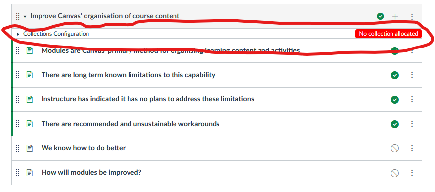
Open the module configuration area
As with the Collections configuration area, you open the module configuration area by clicking on the small arrow. This will open the module configuration area and reveal the module's metadata.
The following image shows an early version of the module configuration area, currently the major areas of the module configuration area, includes:
- Collection - used to specify which collection the module belongs to.
- Label - three elements (label, auto-number, and number) used to specify the module's label and number.
- Date - specify the date for the module using three elements - day of week; week; and time.
- Image - associate an image with the module and how it should be scaled to fit with a card.
- Description - provide a short description or rationale for the module.
- Additional metadata - add and remove additional metadata in the form of name/value pairs.
Use these form elements to set and change the module configuration.

Allocate the modules
The Collections element will contain a list of the current collections. Use the menu to choose one. When you change the collection allocation for a module, your view of Collections will change in a number of ways.
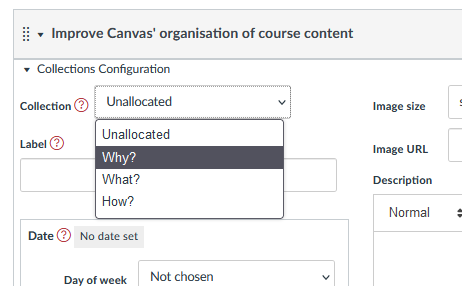
Examine the change
Module only appears when its collection is current
For example, the Improve Canvas' organisation of course content module was allocated to the Why? collection. It is not visible when viewing the What? collection.
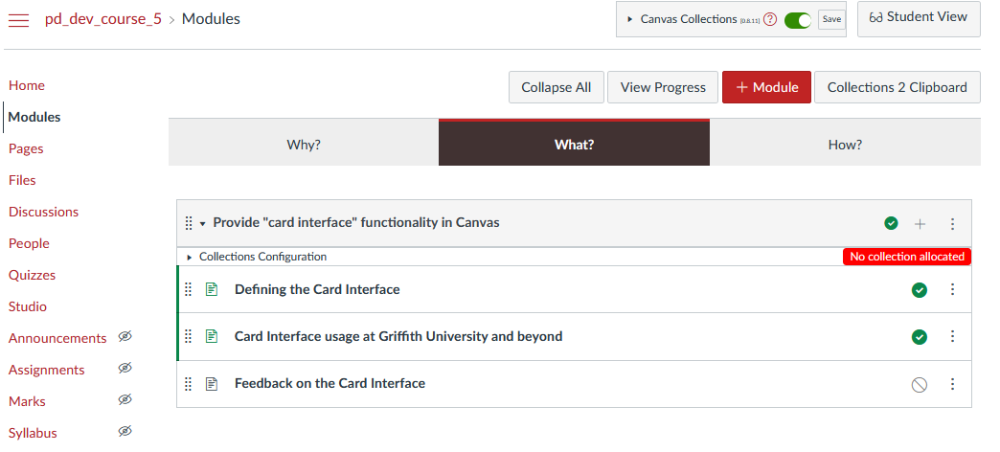
Module is represented using the collection's representation
The Why? collection was configured to use the GriffithCards representation. Hence the newly allocated module is represented as a card - a rather bare card.
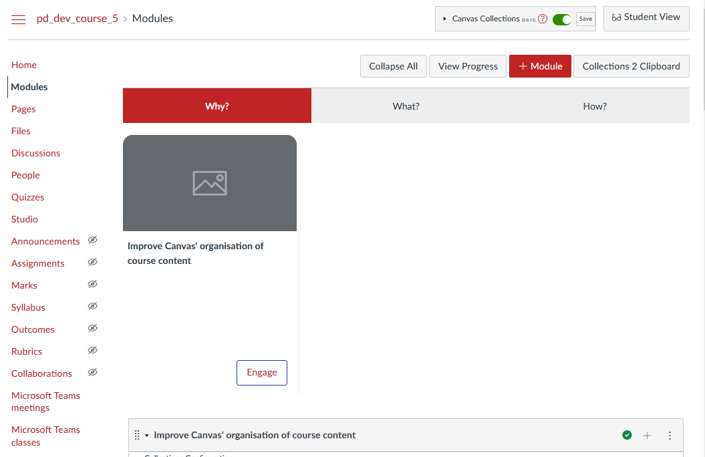
Module configuration area lists the allocated collection
The allocated module now shows Why? as it's collection.
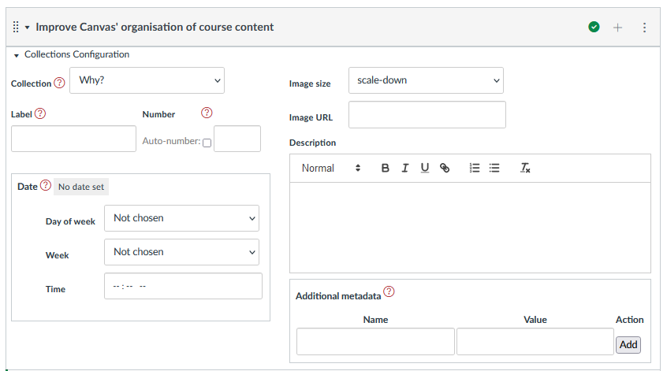
Allocate the remaining modules
Once all the modules are allocated to collections, the Collections configuration Existing collections section looks like the following: 3 modules in Why?; 5 modules in What?; and, 5 modules in How?.

The following animated image shows the rest of the interface once all modules are allocated to collections. Some points to note
-
Some modules remain unpublished.
The cards representation adds a warning (visible to teachers and designers) identifying unpublished modules. These will not be visible to students.
-
Navigation between the three collections works as expected.
- Clicking on the Engage button on a Card brings that module to focus.
- The cards are all relatively blank with limited metadata (e.g. images, descriptions etc)
Time to add some additional metadata.
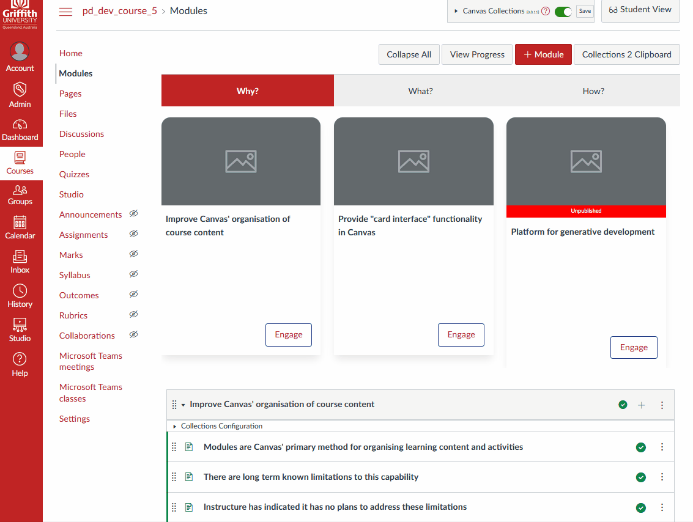
Specify additional metadata
As mentioned above, the additional metadata that can be added includes the following list. Each with its own form elements. The following walk-through gives an example of each.
Note: As soon as metadata is changed, the module's representation will be updated.
| Metadata | Description | | --- | --- | --- | | Description | Some HTML intended to provide students with a description or rationale for the object represented by the module | | Image | A visual image to represent the module | | Label & Number | Explicitly identify a module as a particular object (the label) and its position in the collection (the number - which can be auto calculated) | | Date & Date Label | Specify the day/time when the activity occurs, is due etc. Through a combination of a date and a label (e.g. due, commencing etc) | | Additional metadata | A flexible method for specifying any additional metadata in the form of pairs of name and value |
Add a description
The description is best used to provide students with additional information about what, why and how they might engage with the activities and information contained by a module. The description is a relative short piece of text entered using a simple visual editor under the description heading of the module configuration area.
| Entry | Representation |
|---|---|
| 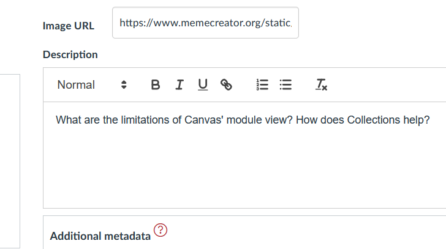 | 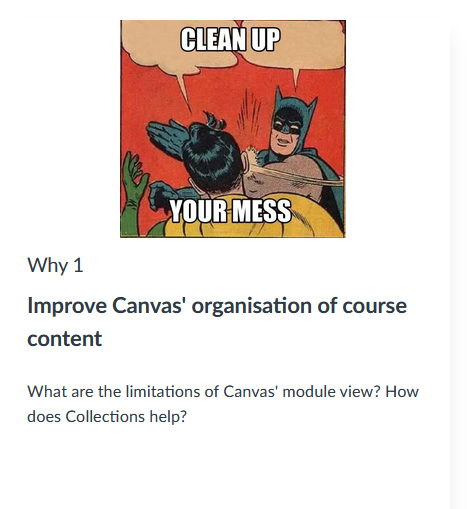 |
Add an image
The ability to add an image to each module is a powerful way to improve the visual design of ca course and help student way finding by providing a strong, unique a visual representation of the module.
Collections uses two pieces of metadata to specify the image and how it is displayed:
- The Image URL - the web location where the image can be viewed by users of the Canvas course site (e.g. typically the files area of the course site, or on the open web)
- The Image scale - how the image is scaled to fit within the available space - possibilities are outlined in the following table.
Image scale
Image scale is implemented and constrained by a standard CSS property called object-fit. The following table outlines the possible values for object-fit that appear in the Image scale drop down in Collections. The animated image below demonstrates how different values affect the display of the image.
| Value | Description |
|---|---|
cover |
The image is scaled to fit the available space, maintaining the aspect ratio. The image is cropped to fit the available space. |
contain |
The image is scaled to fit the available space, maintaining the aspect ratio. The image is not cropped. |
fill |
The image is scaled to fill the available space, maintaining the aspect ratio. The image is cropped to fit the available space. |
fit |
The image is scaled to fit the available space, maintaining the aspect ratio. The image is not cropped. |
none |
The image is not scaled. |
scale-down |
The image is scaled to fit the available space, maintaining the aspect ratio. The image is not cropped. |
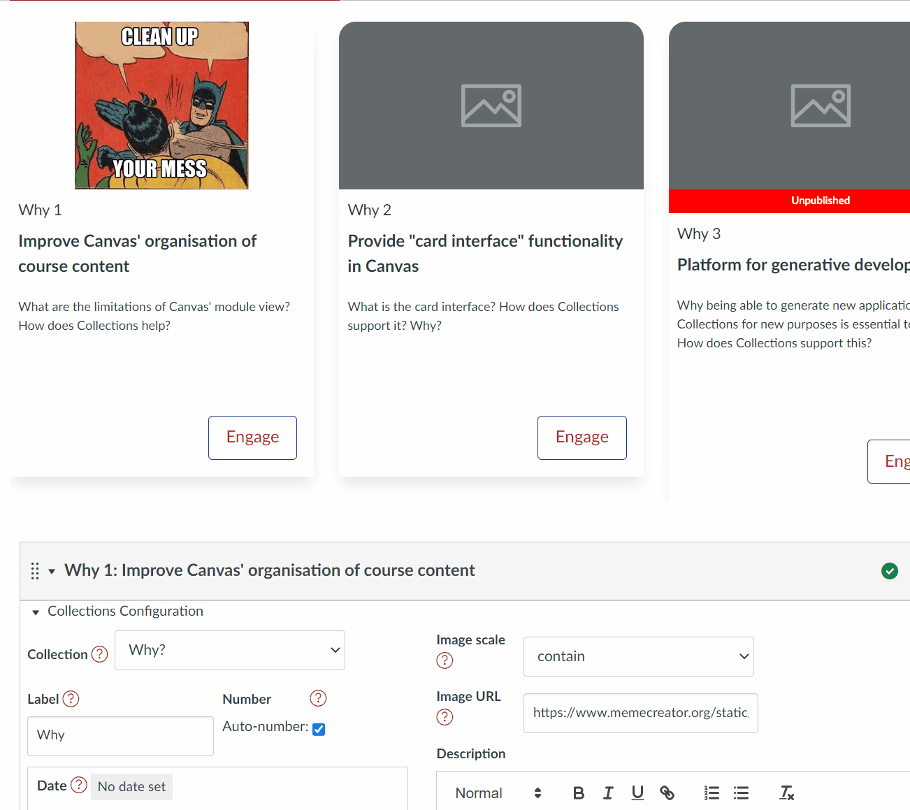
Image URL
The Image URL is a simple text field. The URL can be a web address (e.g. a URL on the open web) or a Canvas file URL. The following animated image demonstrates the process of obtaining a URL for an image within a Canvas course's files area and using it with Collections.
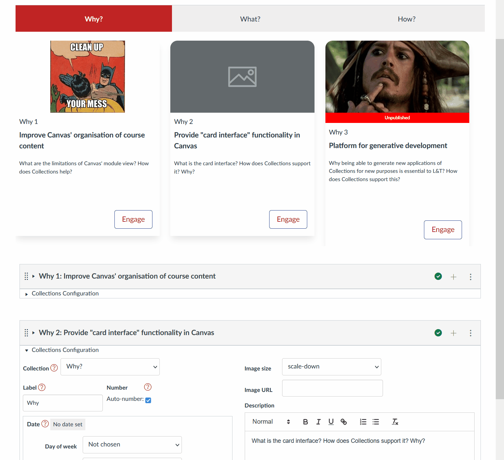
Add a label and a number
The label helps identify to the student that a Canvas module is a Lecture, Workshop, Assignment or some other context/learning design specific object. It helps them understand why, what, and how to engage with the module. The number helps establish the order of the objects.
A label is simple any sequence of characters (including emojis).
There are two options for the number:
- Auto-number - the number is automatically calculated based on the order of the modules in the collection. The first lecture will be Lecture 1 the second Lecture 2 and so on. This is the default.
- Explicitly specified string - i.e. you can manually specify any sequence of characters, including emojis, or leave it blank.
The Auto-number option is provided to enable modules to be moved around during re-design without having to manually update the number.
Auto number example
For the current (somewhat contrived) example, it's been decided that the three modules in the Why? collection will be labelled Why 1, Why 2 and Why 3. To achieve this, all three modules can be configured using the following approach for label and number. Note that the Auto-number checkbox is checked.
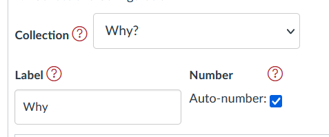
With all three Why? collection modules configured this way the representation looks like this.
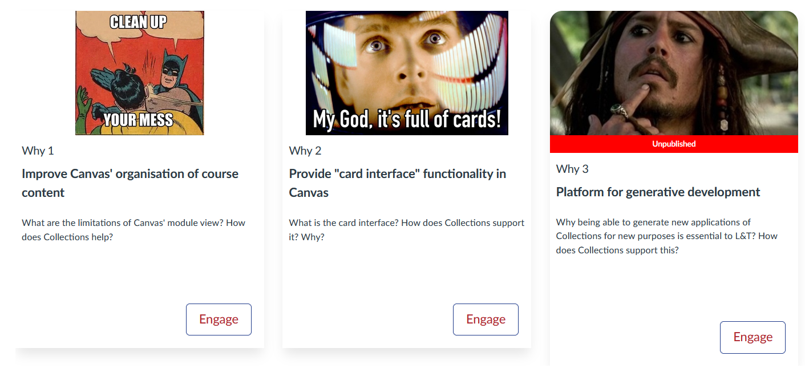
Explicitly specified string examples
Both label and number can include any characters you provide - including emojis etc. To explicitly specify a string for the number, you first need to uncheck the Auto-number checkbox. The following image shows the Why 2 module label modified to include an emoji, and the number modified to include a string of characters (including an emoji).
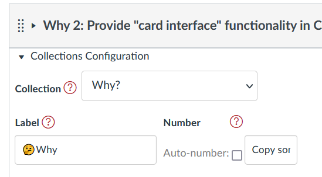
With similar changes to the label and number for the other two Why? modules the representation looks (for a short time) like the following image.
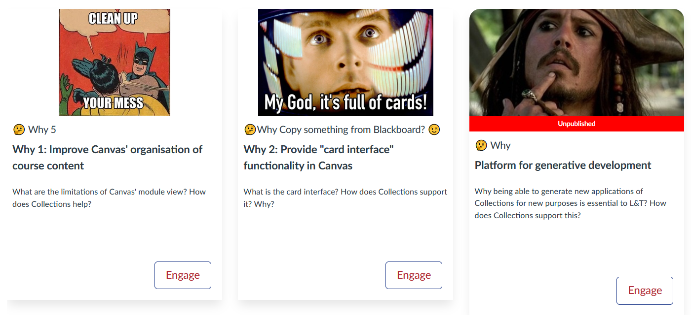
Add a date and date label
Configure a module for the assessment table representation
The assessment table representation - as the name suggests - is explicitly designed to represent the collection of assessment information for a course. Consequently, it includes (and perhaps requires) some assessment specific metadata, summarised in the following table.
| Purpose | Source | Description |
|---|---|---|
| Title | Name of the Canvas module containing assessment information | The title of the assessment item |
| Description | The standard Collections description | A summary of the assessment item |
| Due Date | The standard Collections date | The date the assessment item is due or perhaps a date range when the assessment is available |
| Weighting | Additional Collection's metadata with the name weighting | The % weight of the assessment item |
| Learning outcomes | Additional Collection's metadata with the name learning outcomes | The learning outcomes that the assessment item is intended to assess |
The first three are standard metadata already explained above. The last two are additional metadata that can be added to any module. The following animated image demonstrates the process of adding these to an assessment table representation.
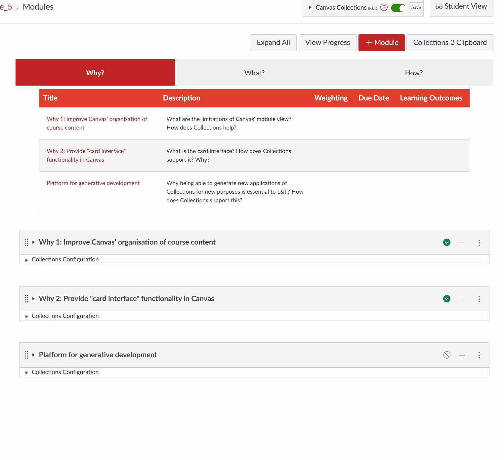